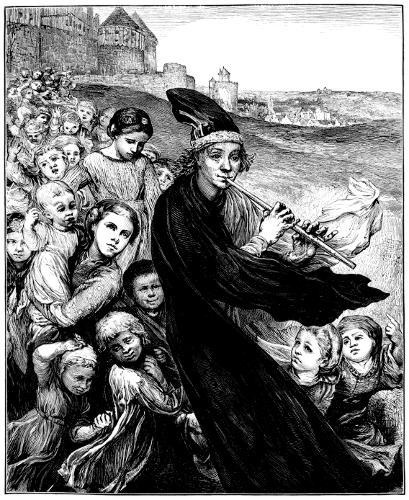
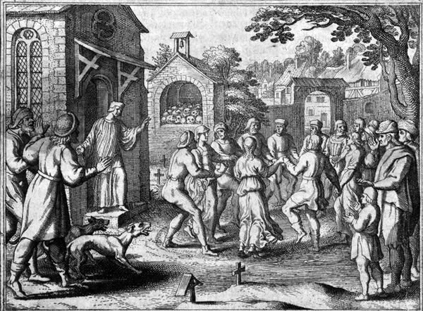
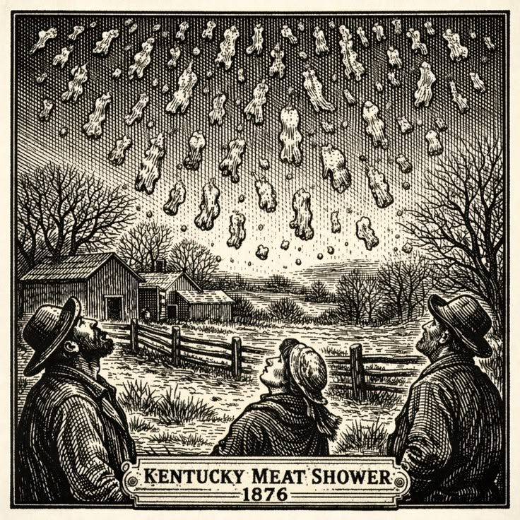

El flautista de Hamelín
Esta famosa leyenda alemana cuenta la historia de un misterioso músico que liberó a la ciudad de Hamelín de una plaga de ratas. Cuando los habitantes se negaron a pagarle, regresó y atrajo a los niños con su flauta hasta hacerlos desaparecer. Aunque existen teorías que relacionan el relato con hechos históricos, su verdadero origen continúa siendo un misterio
Ver más
La epidemia de baile
En 1518, en la ciudad de Estrasburgo, una mujer comenzó a bailar sin detenerse y, con el paso de los días, cientos de personas hicieron lo mismo. Algunos terminaron exhaustos y las autoridades no sabían cómo detener el fenómeno. Aunque existen teorías relacionadas con el estrés y los efectos psicológicos colectivos, todavía no hay una explicación definitiva.
Ver más
La lluvia de carne de Kentucky
En 1876, en Kentucky, Estados Unidos, ocurrió un extraño fenómeno en el que trozos de una sustancia parecida a la carne cayeron del cielo sobre un campo. Aunque se propusieron explicaciones, como que algunas aves habían expulsado restos de alimento mientras volaban, el suceso sigue siendo recordado por lo inusual y desconcertante que resultó para quienes lo presenciaron.
Ver más